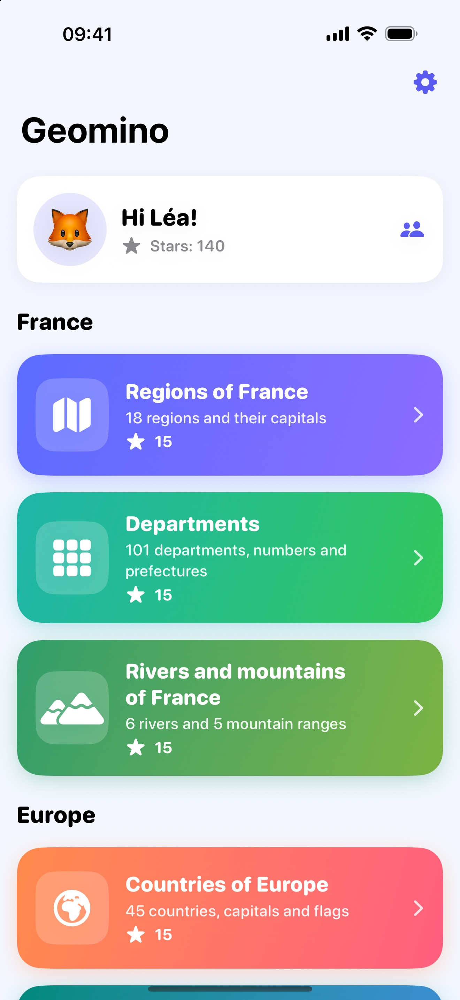
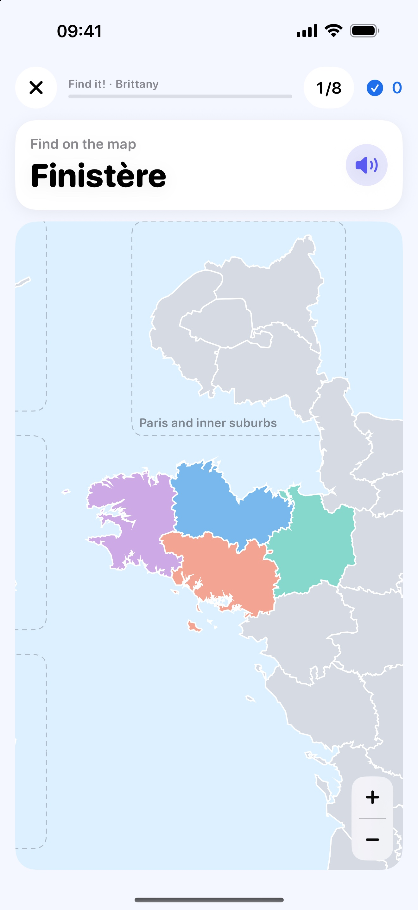
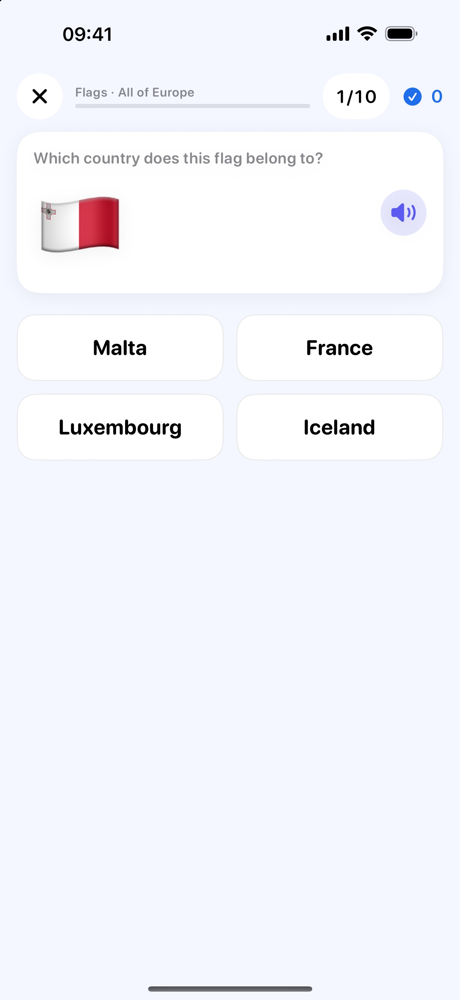
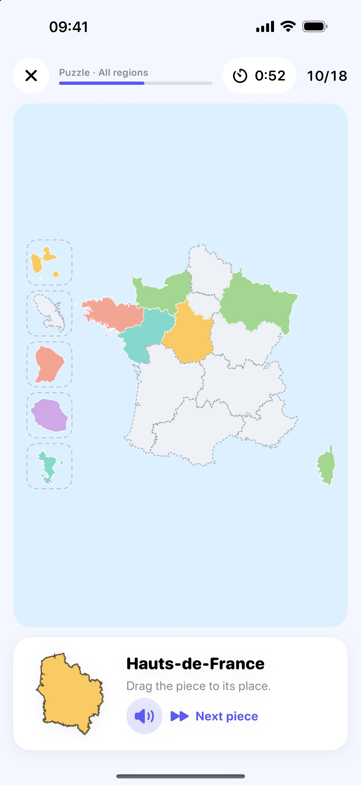
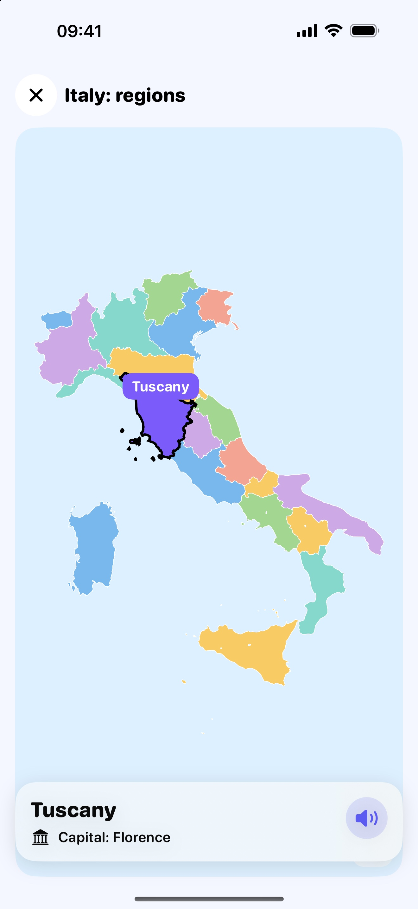

For children aged 6 to 12
Geography through play
Regions and departments of France, countries of Europe, rivers and mountains, Spain, Italy and Germany: Geomino teaches maps with short games and stars to win.
Download on theApp Store
Games
Eight ways to learn the maps
Rounds of ten questions, three difficulty levels, and mistakes come back more often so they stick.
Explore
Tap a place to see and hear its name, capital or number. Always free.
Find it!
The name appears, the child taps the right place on the map.
Which shape?
A place lights up: which one is it? Three or four answers to choose from.
Capitals
Regional capitals, French prefectures, capitals of countries and German states.
Numbers
The 101 French department numbers, as on number plates and postcodes.
Flags
The flags of the 45 countries of Europe.
Puzzle
Drag each piece to its place on the empty map, with a timer and a best time.
Against the clock
60 seconds to give as many right answers as possible.




Maps
10 maps, from France to Europe
For parents
Made for children, reassuring for parents
Parental gate
Settings and the purchase sit behind a multiplication written in words.
No ads, no tracking
No advertising, no account, no data collected.
Works offline
Everything works without the Internet, in the car or on holiday.
Up to 4 players
Each child has a profile, stars and a level: easy, normal or expert.
Read aloud
Questions and names are read out, for the youngest readers.
5 languages
French, English, Spanish, Italian and German, chosen in the settings.
Geomino Complete
Every map and every game, up to 4 players and all stickers. One purchase, no subscription, shared with your family. Already free: Explore on every map, the regions of France and the departments of Île-de-France and Auvergne-Rhône-Alpes.
Available on the App Store
Geomino is available on iPhone and iPad. Free to start, no account and no ads.
Download on theApp Store